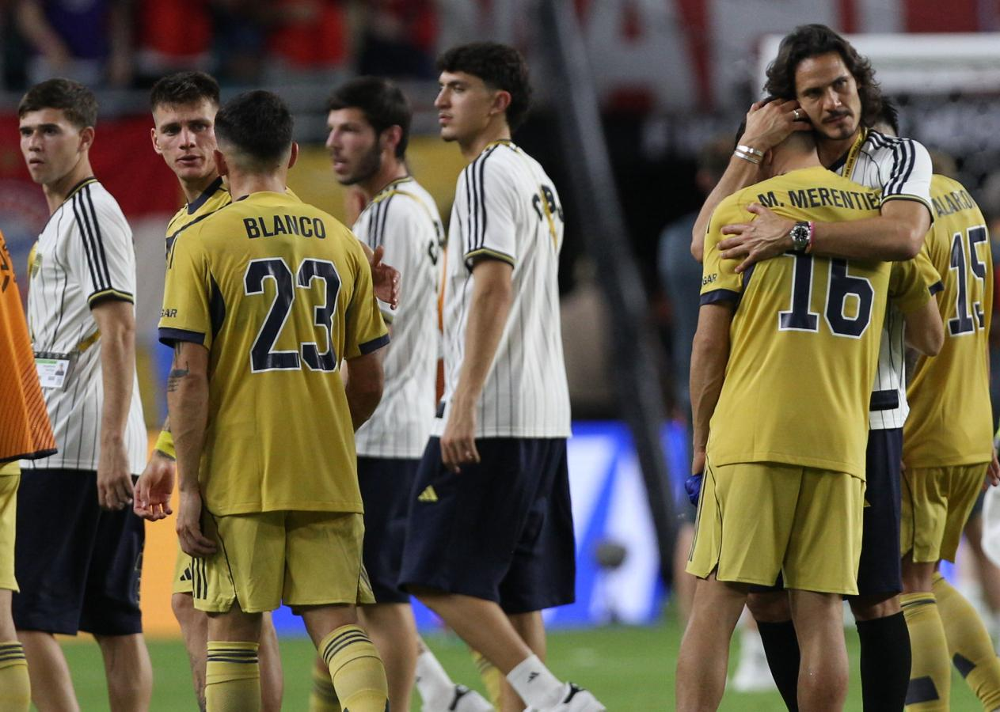

El Xeneize no supo aguantar el empate y perdió 2-1 por un tanto de Olise en el final. Kane había abierto el marcador y Merentiel igualó con un golazo.
BOCA no pudo con Bayern Múnich y perdió 2-1 en el Hard Rock Stadium de Miami por la segunda fecha del Grupo C del Mundial de Clubes. El Xeneize estuvo cerca del empate, pero recibió un nuevo gol en el final y deberá jugarse la clasificación en la última jornada. Tras la goleada 6-0 de Benfica sobre Auckland City, los portugueses escalaron a la cima de la zona y le metieron presión al Xeneize, que jugó con la calculadora en la mano en busca de la clasificación a los octavos de final.
La marea azul y oro de hinchas del conjunto de la ribera invadió a invadir las tribunas. Tras las 50 mil almas que alentaron al equipo en el debut, mayor cantidad de público xeneize se hizo presente ante el elenco alemán. A diferencia de lo ocurrido con Benfica, Boca viste en esta ocasión su camiseta alternativa, con preponderancia del color dorado y una franja azul a la altura del pecho.